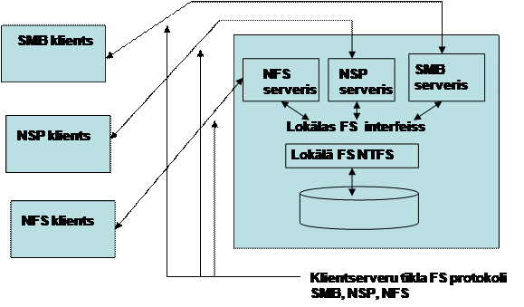

3.1.TOS
jēdziens un komponenti
3.2.Tīkla dienesti kā klientserveru sistēmas
3.3.Tīklu izveidošanas shēmas – vienranga, ar izdalītiem
serveriem un hibrīda tīkls
3.4.2. Tīkla failu sistēmas realizēšana
3.4.4.Tīkla mijiedarbības aspekti
4. Klientserveris tehnoloģijas pamati.
4.1.Paralēlās apstrādes pamatprincipi
4.2.Paralēlie procesi un pavedieni
4.3.Pavedienu koordinēšana un sinhronizēšana.
3.1.TOS jēdziens un komponenti
OS ir programmu komplekss, kas vada datu organizēšanu un programmu izpildi datorā, nodrošina aparatūras un programmatūras kopdarbību, resursu racionālu izmantošanu, kā arī sa darbību ar lietotāju.
Tīkla OS (TOS) ir programmu kopums, kas tīklā saslēgtiem datoriem ļauj kopīgi izmantot datnes un tīklam pievienotās ierīces. Terminam “Tīkla OS” var uzrādīt divas nozīmes:
- Visu tīklā saslēgto datoru operētājsistēmu kopums;
- Atsevišķa datora operētājsistēma, kas ļauj datoram strādāt tīklā.
TOS galveni funkcionālie komponenti ir (3.1.att.):
- Datora lokālo resursu vadības līdzekļi, kas realizē atsevišķa (autonoma) datora operētājsistēmas visas funkcijas (atmiņas iedalīšana starp procesiem, procesu plānošana un dispečerizācija, ārējās atmiņas vadība, lietotāja interfeisa uzturēšana utt.);
- Tīkla līdzekļi, kurus savukārt var iedalīt uz trīs komponentiem –
- OS servera daļa – lokālo resursu un pakalpojumu nodošana tīkla komponentu kopējai lietošanai.
- OS klienta daļa – līdzekļi, kas atbalsta pieprasījumus attāliem resursiem un pakalpojumiem.
- OS transporta līdzekļi, kas kopā ar komunikācijas sistēmu nodrošina ziņojumu pārraidi starp tīkla datoriem.
3.1. att. Tīkla OS funkcionālie komponenti
3.2.Tīkla dienesti kā
klientserveru sistēmas
Vienkāršotā veidā tīkla OS darbs notiek sekojoši. Pieņemsim, ka datora A lietotājs grib izvietot savu failu uz cita tīkla datora B diskā. Viņš ievada atbilstošu komandu, OS programmu modulis, kas ir atbildīgs par interfeisu ar lietotāju, pieņem šo komandu un pārsūta to datora A klienta daļai, kas pieprasīs datora B servera daļu par pieeju pie atbilstošiem resursiem. Tāda veida pieprasījumus sauc par ziņojumiem, kas tiek sūtīti pa tīklu.
Ziņojumu pārsūtīšanas vadīšanu organizē OS transporta līdzekļi, kas formulē ziņojumu, sadala to dalās, pārveido datoru vārdus ciparu adresēs, nosaka maršrutu tīklā utt. Datoru sadarbība šajā procesā tiek regulēta atbilstoši komunikācijas protokoliem – Ethernet, Token Ring, IP, IPX utt.
Lai divi datori varētu apmainīties pa tīklu ar ziņojumiem, viņu OS transporta līdzekļiem vajadzētu uzturēt komunikācijas protokolu kopējo kopu. Komunikācijas protokoli pārsūta ziņojumus bez iedziļināšanas to saturos.
Datora B pusē strādā OS servera daļa, kas pastāvīgi gaida ziņojumus no tīkla uz attālo pieeju pie šī datora resursiem. Kad pieprasījums no tīkla ir pieņemts, servera daļa griežas pie lokāla diska un ieraksta failu atbilstoši norādījumiem. Protams, kā šo darbību izpildei ir vajadzīgs ne viens ziņojums, bet to virkne, kas pārsūta OS komandas un pārsūtama faila datus.
Par ērtu un lietderīgu OS klienta daļas funkciju var uzskatīt to iespējas izcelt pieprasījumu pie lokāla faila no pieprasījuma pie attāla faila. Ja klientu daļa prot izdarīt to, tad pielietojumiem nevajag rūpēties par to, ar kādiem (lokāliem vai attāliem) failiem viņi strādā – klientu programma pati saprot pieprasījumu un pārsūta (redirect) to attālam datoram. Tāpēc OS klienta daļu bieži sauc par redirektoru. Dažreiz atpazīšanas funkciju izpilda viņš OS klientu daļas modulis, ko arī sauc par redirektoru.
OS klienta daļa izpilda arī pieejas pie resursiem formātu pārveidošanu: A datora lokālais formāts – B datora servera daļas formāts un otrādi, B datora servera daļas formāts - A datora lokālais formāts. Pielietojumi neatšķir lokālo un attālo pieprasījumu izpildīšanu.
Tīkla OS servera un klientu daļu apvienojums, kas nodrošina pieeju pa tīklu datora konkrētiem resursiem sauc par tīkla dienestu piem., failu dienests. (Dažreiz saka, ka tīkla dienests piedāvā tīkla lietotājiem kādu pakalpojumu kopu. Šos pakalpojumus sauc par tīkla servisu. Neskatoties uz to, ka dažreiz šos terminus (dienests un serviss) lieto kā sinonīmus, jāņem vērā ka bieži ir principiāla atšķirība starp tiem. Serviss ir interfeiss starp pakalpojumu patērētajam un piegādātājam, t.i. dienestam).
Katrs dienests ir saistīts tīkla resursa konkrētu tipu un/vai konkrētu pieejas iespēju šiem resursiem. Piem., drukas dienests nodrošina tīkla lietotājiem pieeju atsevišķiem tīkla printeriem un piegādā drukas servisu. Tīkla OS lietotājiem vissvarīgākie ir failu un drukas dienesti.
Starp tīkla dienestiem ir tādas, kas ir orientēti tikai uz tīkla administratoriem un nodrošina tīkla darba organizēšanu. Piem., Novell NeWare 3.x Bindary dienests ļauj tikla administratoram pārvaldīt datora tīklu lietotāju datu bāzi. Par progresīvāko var uzskatīt pieeju, kad tiek veidots centralizēts izziņu dienests, ko sauc par katalogu dienestu, kas ir paredzēts datu bāzu vadībai ne tikai par tīkla lietotājiem, bet arī par visiem tīkla programmatūras un aparatūras komponentiem piem., kompānijas Novell NDS dienests.
No tā, cik bagātu pakalpojumu kopu piedāvā OS lietotājiem, pielikumiem un tīkla administratoriem ir atkarīga tīkla OS vieta kopējā tīkla OS rindā.
Pēc savas dabas tīkla dienesti ir klientserveru sistēmas. Ņemot vērā ka jebkāda tīkla servisa realizēšanā ir pieprasījuma avots (klients) un pieprasījuma izpildītājs (serveris), var uzskatīt ka tīkla dienests iekļauj divas nesimetriskas daļas – klientu un serveru (3.2.att.). Tīkla dienests operētājsistēmā var būt pārstāvēts ar abām daļām vai tikai ar vienu no tiem.
3.2. att. Tīkla dienests kā klientserveru sistēma
Bieži sāka ka serveris piedāvā savus resursus, bet klients to izmanto. Jāņem vērā, ka klients arī izmanto savus resursus tīkla dienesta atbalstīšanai.
Par principiālo atšķirību var uzskatīt to, ka tīkla dienesta darba izpildīšanas vienmēr ir klients, bet serveris atrodas pieprasījumu sagaidīšanas pasīvā režīmā.
Sadarbība starp klientu un serveru daļām ir standartizēta ar to ka abas daļas atbalsta kopējo sadarbības protokolu.
Praksē eksistē dažādas pieejas tīkla OS izveidošanai, kas atšķiras ar to, cik dziļi tīkla dienesti ir iebūvēti operētājsistēmā (3.3.att.):
1. Tīkla dienesti ir dziļi iebūvēti operētājsistēmā;
2. Tīkla dienesti ir apvienoti čaulā;
3. Tīkla dienesti tiek realizēti un piegādāti kā atsevišķi produkti.
3.3. att. Tīkla OS izveidošanas varianti
Piemēri:
1.OS Windows NT, UNIX, NetWare, OS/2 Warp.
2. LAN Manager, LAN Server varianti priekš OS VAX VMS, VM, OS/400, AIX, OS/2; klienta čaula NetWare virs MS-DOS; NetWare priekš UNIX, File and Print Services for NetWare.
3. Attālas vadības serveris WinFrame darbam Windows NT vidē, kas paplašina Windows NT servera Remote Access Server iespējas; analoģisks produkts NetWare Connect attālai pieejai NetWare videi.
Atkarībā no tā kā ir sadalītas funkcijas starp tīkla datoriem, datori var izpildīt dažādas lomas. Ja dators pārsvarā apkalpo citu datoru pieprasījumus – viņš ir tīkla izdalītais serveris. Ja dators griežas ar pieprasījumiem pie cita datora resursiem – viņš izpilda klienta mezgla lomu. Ja dators apvieno klienta un servera lomas – viņš ir vienranga mezgls.
3.3.Tīklu izveidošanas shēmas –
vienranga, ar izdalītiem serveriem un hibrīda tīkls
Tīkli var būt izveidoti pēc vienas no sekojošām shēmām:
1. Vienranga tīkls – tīkls, kas ir bāzēts uz viena vienranga mezgliem (3.4.att.).
2. Tīkls ar izdalītiem serveriem - tīkls, kas ir bāzēts uz klientiem un serveriem (3.5.att.).
3. Hibrīda tīkls – tīkls, kas iekļauj visu veidu mezglus (3.6.att.).
Katrai shēmai ir savas priekšrocības un trūkumi, kas nosaka arī to pielietošanas sfēras.
Vienranga tīklos visi datori ir vienlīdzīgi pieejas tiesībās cita datora resursiem. Tādos tīklos uz visiem datoriem funkcionē vienranga operētājsistēmas, kas iekļauj kā servera (S), tā arī klienta (K) tīkla dienestu komponentus. Tādu OS piemēri: LANtastic, Personal Ware, Windows for Workgroups, Windows NT Workstation, Windows 95/98. Tādi tīkli ir pietiekoši vienkārši izveidošanā un ekspluatācijā, neprasa centralizētus administrēšanas līdzekļus un tiek izmantoti ja datoru skaits nepārsniedz 10-20.


3.4. att. Vienranga tīkls
Tīklos ar izdalītiem serveriem izmanto tīkla OS speciālus variantus, kas ir optimizēti darbam servera lomā un kurus sauc par serveru OS. Lietotāju datori tādās OS strādā klientu OS vadībā. OS specializācija darbam tikai servera lomā (piem., serveru OS NetWare) paaugstina to efektivitāti servera operāciju izpildē, bet ierobežo to izmantošanu kā pielietojumu izpildīšanas vidi. Tāpēc serveru OS izstrādātāji iekļauj tajās visus komponentus, kas ļauj izmantot tās kā universālo serveri un kā klienta OS. Dažas kompānijas izstrādā vienas tīkla OS divus variantus, piem., Windows NT Workstation un Windows NT Server. Abi varianti iekļauj vairāku tīklu dienestu klienta un servera daļas. Piem., OS Windows NT Workstation var izpildīt ne tikai tīkla klienta lomu, bet var piedāvāt tīkla lietotājiem failu servisu, drukas servisu, attālās pieejas servisu utt., kas ļauj izmantot to kā bāzi vienranga tīkla organizācijai. No citas puses, OS Windows NT Server iekļauj līdzekļus, kas lietot šo datoru kā klienta darba staciju.

3.5. att. Tīkls ar izdalītiem serveriem
Lielos tīklos kopā ar klientserveris saitēm ir vajadzība arī pēc vienranga saitēm – tas ir hibrīda tīkli.

3.6. att. Hibrīda tīkls
3.4.
Tīkla dienesti
Praktiski visas mūsdienu OS ir tīkla OS, tātad ļauj lietotājiem izmantot ne tikai savus lokālus resursus, bet iegūt pieeju citu datoru, kas ir pieslēgti tīklam, resursiem (protams, ja attālie resursi ir definēti kā dalāmie un lietotājam ir atbilstošas tiesības). Funkcionējot tīklā, OS balstās uz lokālo resursu vadības funkcijām, bet OS satur arī speciālus tīkla dienestus, kas realizē specifiskās funkcijas – tīkla lietotāju kopīga darba organizācija.
3.4.1. Tīkla failu sistēmas.
Jebkādas dalītās sistēmas pamat komponents ir failu sistēma, kas arī šajā gadījuma ir dalīta. Tādu sistēmu atbalsta viens vai vairāki datori, uz kuriem tiek glabāti faili. Tādus datorus, kas ļauj citiem lietotājiem pieeju saviem failiem, sauc par failu serveriem. No programmatūras viedokļa dalītā failu sistēma ir tīkla dienests, kas iekļauj programmas-serverus un programmas-klientus, kas sadarbojas pa tīklu ar noteikto protokolu. Tīklā vienlaicīgi var strādāt vairāki programmu failu serveri, katrs no kuriem piedāvā dažādus failu pakalpojumus (piem., UNIX un Windows failu pakalpojumi).
Tīkla failu sistēma (FS) iekļauj šādus
elementus:
• Lokālā failu sistēma;
• Lokālas failu sistēmas interfeiss;
• Tīkla failu sistēmas serveris;
• Tīkla failu sistēmas klients;
• Tīkla failu sistēmas interfeiss;
•
Klientserveru tīkla failu sistēmas
protokols.
Tīkla FS klienti ir programmas, kas izpildās uz
vairākiem datoriem tīklā. Programmas apkalpo pielietojumu pieprasījumus
failiem, izvietotiem attālu datorā. Tas varētu būt OS čaulas (Windows Explorer
vai UNIX shell) vai jebkādas lietojumprogrammas.
Tīkla FS klients pārsūta pieprasījumu citam
programmas komponentam - tīkla FS
serverim, kas izpilda to pats vai pārsūta
apstrādei lokālai FS. Apstrādes rezultāts tiek sūtīts pielietojumam
pretēja virzienā caur tiem pašiem komponentiem. Sev starpā tīkla FS klients un
serveris sadarbojās pēc noteikta protokola, bet ja tīkla un lokālas FS interfeisi
sakrīt, sadarbībai var izmantot RPC mehānismu.
Tīkla FS protokols retranslē sistēmas klienta
izsaukumus serverim un papildus var izpildīt arī sarežģītākas funkcijas, kas
ņem vērā tīkla sadarbības dabu.
Dažas situācijas, kad FS klienta un servera sadarbības
protokols var ietekmēt uz attālinātas pieejas efektivitāti:
•
Datora,
uz kura funkcionē tīkla FS serveris, atteikšana seansā ar klientu laikā;
•
Apkalpošanas
aizkaves tīkla sastrēgumu un failu servera pārslogošanas dēļ;
•
Datu
zaudējums un failu sistēmas integritātes postījums datora atteikšanas dēļ.
Dažreiz glāba katra faila vairākas kopijas uz dažādiem datoriem. Tādas kopijas
sauc par replikām (replica). Replikācija atrisina arī
failu servera pārslogošanu;
•
Autentifikācija
tiek izpildīta uz viena datora, bet autorizācija - uz cita.
Uzrādītas problēmas risina kompleksā, tāpēc
vienai un tai pašai lokālai failu sistēmai eksistē dažādi tīkla failu sistēmas
protokoli. Piem., pie NTFS var piekļūt ar tādiem protokoliem kā SMB (Windows
OS), NCP (NetWare OS), NFS (UNIX saimes OS).
Tīkla failu
sistēmas modelis:

Pieeja pie lokālas FS ar dažādiem klientserveru
protokoliem:

No citas puses izmantojot vienu un to pašu
protokolu var realizēt attālo pieeju pie dažāda tipa lokālam FS. Piem., SMB
protokolu var izmantot ne tikai pieejai FAT failu sistēmai, bet arī NTFS un
HPFS failu sistēmām, kas varētu būt izvietoti kā uz viena, tā arī uz dažādiem
datoriem.
Tīklos izmanto dažādus tīkla FS.
Lokālos
tīklos daudzus gadus dominēja tīklu OS NetWare, kas izmantoja uz failu
serveriem oriģinālu lokālu FS NetWare un protokolu NCP.
Kā citu populāru tīkla FS veidu var minēt firmu
Microsoft un IBM sistēmas, kas bija izstrādāti priekš lokāliem tīkliem un
izmantoja FAT lokālu FS, SMB protokolu un FAT interfeisu ar paplašinājumu
priekš klientiem. Vēlāk SMB protokols tika pielietots arī lokālām FS NPFS un
NTFS.
OS UNIX
vide plaši izmantoja divas tīklu FS – FTP (File Transfer Protokol) un NFS
(Network File System). Viņi realizēja pieeju lokālai FS s5/ufs, kas ir bāzes
sistēma vairākām OS UNIX versijām. Abas tīkla FS izmanto savus klientserveru
protokolus FTP un NFS, apgādājot savus klientus ar s5/ufs interfeisu.
Ar laiku lielos tīklos vienlaicīgi saka lietot
vairākus tīkla FS, piem., NetWare un SMB vai NetWare un NFS. Visiem lietotājiem
vajadzēja saglabāt ērtu darba vidi, rezultāta parādījās dažādi failu serveri,
kas atbalstā dažādas lokālas FS un protokolus, un klienti, kas nodrošināja pielietojumiem
un lietotājiem dažādus interfeisus.
Tīkla lietotājiem un pielietojumiem ir svarīgs
interfeiss, ko piedāvā tīkla failu dienesti, kas atšķiras pēc sekojošiem
aspektiem:
•
Failu struktūra. Tīkla FS lielāka daļa atbalsta faila definējumu kā baitu secību, bet
ne ierakstu secību. Tas ļauj organizēt nestrukturēta faila jebkāda apgabala
lasīšanu, bet strukturētiem failiem – tikai noteiktā formāta ierakstu lasīšanu.
•
Failu modifikācija. Vai ir iespēja modificēt failu pēc tā izveidošanas? Lielāka tīkla FS
daļa ļauj to darīt, bet dažās dalītās sistēmās var izmantot tikai divas faila
operācijas – create un read. Tādus failus sauc par nemaināmiem un viņiem daudz
vieglāk organizēt kešēšanu un replikāciju.
•
Failu sadalīšanas semantika – nozīme tādu lasīšanas un rakstīšanas
semantiku, lai neradās problēmas ar datu interpretāciju.
UNIX semantika atbalsta failu operāciju absolūto laika sakārtošanu, kas nozīme ka strādājot ar koplietojamu failu visi lietotāji uzreiz vēro visas izmaiņas failā. Dalītās sistēmās ši semantika var būt nodrošināta tikai tad, ja izmanto tikai vienu failu serveri un klienti neizmanto failu ķešēšanu.
Seansa semantika nozīmē, ka izmaiņas failā no sākuma var redzēt tikai process, kas to izpilda. Tikai pēc faila aizvēršanas to redzes pārējie.
Nemaināmo failu semantika nozīmē ka failu nevar atvērt rakstīšanai, tātad izmaiņu ieviešana prasa veidot jauno failu zem cita vārda. Lietotājiem jāvēro faila kopiju vārdus.
Transakciju semantika paredz, ka visas transakcijas (failu operāciju apakš operācijas) pieder pie nedalāmiem un tiek fiksētas speciālā žurnālā, kas ļauj nofiksēt izmaiņas failā tikai tad, kad visas transakcijas ir veiksmīgi nofiksētas.
• Pieejas kontrole. Ar katru failu ir saistīts pieejas vadības saraksts (Access Control List), kas nodrošina datu aizsardzību no nesankcionētas pieejas.
• Pieejas vienība. Failu interfeiss pieder pie viena no iespējamiem veidiem atkarībā no tā, vai viņš atbalsta ielādes-izlādes modeli vai attālās pieejas modeli. Pirmajā gadījumā lietotājam tiek piedāvātas tikai visa faila lasīšanas un rakstīšanas operācijas, t.i. fails no servera tiek nolasīts uz lietotāja datoru un apstrādāts tur, pēc tam ar visam izmaiņām atgriezts uz serveri. Otrajā gadījumā ar failiem var izpildīt dažādas operācijas, t.s. faila daļas lasīšana, rakstīšana, atribūtu izmaiņa, pozicionēšana failā – un operācijas tiek izpildītas uz servera.
3.4.2. Tīkla failu sistēmas
realizēšana
Tīkla FS interfeiss
nodrošina lietotāju un pielietojumu sadarbības veidu ar failu sistēmu,
paslēpjot to realizēšanas īpatnības, kas ir ļoti svarīgs FS
efektivitātei.
Klientu un serveru izvietojums starp datoriem un operētājsistēmā.
Dažās FS (piem., NFS vai FS Windows95/98/NT/2000) uz visiem tīkla datoriem funkcionē viena bāzes programmatūra, kas iekļauj gan servera gan klientu daļas un jebkāds dators var piedāvāt failu dienesta pakalpojumus. Dažreiz realizē OS servera versiju (piem., Windows NT Server), kas izmanto to pašu FS dienesta programmatūru, bet pateicoties iedalītās operatīvas atmiņas lielākiem resursiem var apkalpot vairāk lietotāju nekā klientu dators.
Cits sistēmās failu serveris ir serveru OS
speciāls komponents, kas nav pārstāvēts klientu datoros (piem., OS NetWare).
Darba efektivitātes paaugstināšanai failu
serveris un klients visbiežāk ir OS kodola moduli, kas izpildās priviliģētā
režīmā. Mūsdienu OS šos komponentus izstrādā kā ievadizvades apakšsistēmas
augstā līmeņa draiverus. Efektivitāte tiek paaugstināta pateicoties tiešai
pieejai visiem OS iekšejiem moduļiem (t.s. arī diska kešam) bez pārslēgšanas no
lietotāja režīma uz priviliģēto.
FS serveris var būt realizēts pēc stateful
(tiek saglabāti dati par klienta darbību secību ar failiem) vai stateless
(bez saglabāšanas) shēmām.
Statefull serveri strādā pēc shēmās, kas ir raksturīga
lokālai FS, izmantojot izsaukumus open, read, write, seek, close.
Iekšējā sistēmas tabulā serveris saglabā datus par visiem failiem, ko atvēra
klienti ar izsaukumu open pa tīklu, un atgriež klienta pielikumam faila
identifikatoru fd, ko pēc tam izmanto visos faila izsaukumos. Šajā
tabulā tiek saglabāts arī rādītājs uz faila pozīciju, ar kuru bija izpildītās
lasīšanas un rakstīšanas operācijas.
Pieprasījums Stateless serverim satur pilnu informāciju, kas ir vajadzīga operācijas izpildei, kas palielina ziņojuma garumu un to apstrādes laiku. Stateless serveri neatbalsta apmaiņas protokolā open un close operācijas. Failu dienesta klients pats atbalsta atvērto failu tabulu.
Katras pieejas priekšrocības var raksturot sekojoši.
Stateless serveri:
• Ir bojājumpiecietīgi;
• Neprasa izsaukumus open/close;
• Mazāki pieprasījumi servera atmiņas resursiem;
• Nav ierobežojumu uz atvērto failu skaitu;
• Klienta atteice nerāda servera problēmas.
Statefull serveri:
• Pieprasījumu ziņojumu garumi ir īsāki;
• Veiktspēja labāka;
• Var realizēt apsteidzošo lasīšanu;
• Ir iespējama failu bloķēšana.
Kešešana paātrina pieeju failiem uz diskiem un plaši
tiek izmantota tīkla failu sistēmās. Kešešanas shēmas atšķiras pēc: ķeša izvietošanās,
modifikāciju izplatīšanas veda un ķeša ticamības.
Ķešā
izvietošanai potenciāli ir trīs vietas – servera atmiņa, klienta disks un
klienta atmiņa, katram ir savas priekšrocības un trūkumi.
No failu modifikāciju izplatīšanas varianta ir
atkarīga failu sadalīšanas semantika. Vienlaidu ierakstīšanas algoritms –
katram ķeša elementam, kas tiek modificēts, jaunas vērtības tiek fiksētās ķešā
un uzreiz sūtītās uz serveri lai atjaunotu galvenā faila kopiju. Šis algoritma
nosaka sadalīto failu semantiku UNIXā. Cits algoritms nodrošina seansa
semantiku, atbilstoši kurai faila ierakstīšana uz serverī notiek tikai pēc
faila aizvēršanas.
Klienta
ķeša ticamības pārbaudi var iniciēt klients vai serveris. Pirmajā varianta
klients var izpildīt: katru reizi pirms griešanas failam (UNIX), vai
periodiski, vai tikai faila atvēršanas laikā (kad izmanto seansa semantiku).
Tīkla FS var atbalstīt replikāciju (tiražēšanu)
kā vienu no pakalpojumiem, kas tiek sniegti klientiem. Dažreiz ar to nodarbojas
atsevišķs dienests. Replikācija paredz, ka eksistē viena un tā paša faila
vairākas kopijas, kas tiek glabāta uz atsevišķā failu servera, un pie tam ir
nodrošināta faila kopiju datu saskaņotība. Replikācijas iemesli: drošuma
paaugstināšana un slodzes sadalīšana starp serveriem.
Replikācijas “caurspīdīgums” nozīmē, ka
lietotāji nav lietus kursā pat to ka failam ir replikācijas, un visas
replikācijas darbības tiek izpildītas automātiski. Replikācijas “caurspīdīgums”
ir atkarīgs no replikāciju dēvēšanas
shēmas un no lietotāja piedalīšanas pakāpes replikāciju vadības procesā.
Replikāciju saskaņotība ir viens no svarīgākiem
jautājumiem replikāciju sistēmas izstrādē. Ir dažādi varianti: klienta ķeša
ticamības pārbaudi iniciē serveris, to sauc par centralizēto vadību. Serveris
saglabā datus par to, kas un kādam nolūkam atvēra failu, un failu, kas bija
atvērts rakstīšanai, nevar izmantot citi procesi nekādām darbībām,
•
Read-Any
– Write-All – ja notiek ierakstīšana failā tad visas faila replikācijas tiek
bloķētās, tiek organizēta ierakstīšana visās kopijās, Tiek noņemta bloķēšana un
fails kļūst pieejams lasīšanai, ko var organizēt no jebkādas faila
replikācijas. Trūkums ir tāds, ka daži no serveriem, kas glabā faila
replikācijas, var nefunkcionēt rakstīšanas brīdī.
•
Available-Copies
– ierakstīšana notiek tikai pieejamās replikācijās, ir noņemts iepriekšēja
paņēmiena ierobežojums, bet tas nozīmē ka pēc servera pārlādēšanas viņam vajag
savienoties ar citu serveri un saņemt no tā atjaunotu faila replikāciju.
•
Primary-Copy
– Ierakstīšana ir atļauta tikai vienā faila kopijā, ko sauc par primāro.
Pārējas kopijas ir sekundāras, no tiem var tikai lasīt. Pēc primāra faila
modificēšanas, visiem serveriem ar sekundāriem failiem vajag savienoties ar
serveri, kas atbalsta primāro failu, un saņemt faila atjaunošanas. Trūkums – ja
nestrādā serveris ar primāro failu, tad nav iespējas modificēt šo failu.
•
Quorum
– apvieno visas iepriekšējas pieejas. Pieņemsim, kā tīklā ir kāda faila n
replikas. Algoritms bāzējās uz tā, ka faila izmaiņas tiek ierakstītās w replikācijās, bet
lasīšanas gaitā klients obligāti griežas pie r replikācijām. Nosacījums
(w+r)>n – garantē, ka starp brīvi izvēlētiem replikācijām vienmēr būs kaut
viena, kas glabā pēdējās izmaiņas.
Tīkla failu dienestu piemēri
Failu
pārraides protokols FTP (File Transfer Protocol) ir viens no agrākam
dienestam, kas nodrošināja pieeju attāliem failiem. FTP serveri un klienti
eksistē visās UNIX versijās, iebūvēti Interneta pārlūkprogrammās. FTP protokols
ļauj pārvietot visu failu no attāla datora uz lokālo, tātad strādā pēc
ielādes-izlādes shēmas, kā arī atbalstā attāla kataloga aplūkošanas komandas un
pārvietošanu starp attālās failu sistēmas katalogiem. FTP protokols atbilst
klientserveris shēmai.
FTP klients sastāv no trim funkcionāliem
moduļiem
•
User
Interfeice – lietotāja interfeiss, kas pieņem no lietotāja komandas simbolu
veidā un atspoguļo FTP seansa stāvokli uz simbolu ekrāna;
•
User-PI
– lietotāja komandu interpretators, sadarbojās ar FTP servera atbilstošo
moduli;
• User-DTP – modulis, kas nodrošina faila datu pārraidi pēc klientservera protokola atbilstoši moduļa User-PI komandām. Šis modulis sadarbojās ar klienta lokālo failu sistēmu.
FTP serveris iekļauj sekojošus moduļus:
• Server-PI – pieņem un interpretē komandas, ko pa tīklu pārsūta modulis User-PI;
• Server-DTP – modulis, kas pārvalda faila datu pārraidi atbilstoši moduļa Server-PI komandām. Modulis sadarbojās ar servera lokālo failu sistēmu.
FTP klients un serveris atbalsta divus seansus – pārvaldības un datu pārraides. Pārvaldes seanss tiek atvērts, kad klients uzstāda savienojumu ar serveri, un vienā pārvaldības seansā var izpildīties vairāki datu pārraides seansi. FTP dienestu var lietot darbam kā ar strukturētiem failiem (sadalītiem uz ierakstiem un lappusēm), tā arī ar nestrukturētiem failiem
NFS failu sistēma (Network File System) ir Sun Microsystems izstrādājums, pašlaik ir OS UNIX saimes standartā tīkla failu sistēma un NFS klienti un serveri ir realizēti arī citām OS. NFS ir sistēma, kas atbalstā attālās pieejas failiem shēmu – montēšanas operācijas lietotāja darbs ar attāliem failiem ir līdzīgs darbam ar lokāliem failiem jo NFS servera failu sistēmas apakš koks kļūt par lokālās FS apakš koku.
NFS pamat īdēja – atļaut lietotāju grupai dalīt kopējo failu sistēmu. NFS var lietot kā lokālā, tā arī globālā tīklā. Katrs NFS serveris piedāvā vienu vai vairākus katalogus priekš attālās pieejas (katalogu saraksts atrodas failā /etc/exports). Klienti saņem pieeju šiem katalogiem pēc montēšanas komandas. Savā darbā NFS sistēma izmanto divus protokolus - montēšanas un attālās pieejas. Montēšanas operācijas izpildes gaitā klients saņem kataloga indeksu deskriptora numuru (inode), ko izmato failu lasīšanās un rakstīšana operācijās. Attālās pieejas protokolu izmanto pieejai attāliem katalogiem un failiem. NFS atbalstā lielāku UNIX sistēmas izsaukumu daļu, izņemot open un close, ko vietā lieto lookup un read. NFS sistēma apgrūtina failu bloķēšanu un neatbalsta replikācijas.
3.4.3.
Katalogu dienests
Katalogu dienests (Directory Services) ir tīkla OS specials dienests, kas unificēto objektu veidā glabā informāciju par visiem lietotājiem un tīkla resursiem un ļauj atspoguļot saites starp tiem. Katalogu dienests vienkāršo dalīto pielikumu darbu un paaugstina tīkla pārvaldījumu. Katalogu dienests balstās uz klientservera modeļa: serveri glabā izziņu (dienesta) informācijas datu bāzi, ko izmanto klienti, sūtot serverim atbilstošus vaicājumus. Par perspektīvāku pie katalogu dienesta pieejas standartu var uzskatīt standartu LDAP (Light- weight Directory Access Protokol), kas ir izstrādāts ar Internet savienību un ko izmanto katalogu dienests NDS Novell kompānijas un Activ Directory dienests, ko izstrādāja Microsoft kompānija.
NDS katalogu
dienests
NDS dienests (NetWare Directory Services) ir globāls dienests, kas balstās uz dalītu objektu-orientētu tīkla resursu datu bāzi. NetWare OS un citi NDS klienti, kas strādā uz citām platformām, izmanto šo dienestu attālo resursu pieejai. NDS datu bāze ir daudz līmeņu datu bāze, kas iekļauj datus par visiem tīkla serveru resursiem un nodrošina sadalīšanu, replikāciju izveidošanu, “caurspīdīgumu” un globālumu.
Sadalīšana nozīmē, ka informācija ir dalīta uz nodaļām (partitions), kas glabājas uz dažādiem serveriem. Sadalīšana atvieglo tīkla administrēšanu un nodrošina ātrāku pieeju tīkla resursu datu bāzei pateicoties griešanai tuvākam serverim.
Replika ir NDS nodaļas datu kopija, var izveidot vairākas kopijas un glābāt tās uz dažādiem serveriem. Tas paaugstina atteikšanas stabilitāti.
“Caurspīdīgums” nozīme, ka NDS automātiski izveido saites starp programmatūras un aparatūras komponentiem, kas nodrošina lietotājiem pieeju tīkla resursiem.
Globālums nozīme,
ka ieejot tīkla lietotājiem ir pieeja visa tīkla resursiem, bet ne viena
servera resursiem kā tas bija iepriekš. Tas ir nodrošināts pateicoties globālas
loģiskas ieejas procedūrai (global login).
Informācija par tīkla resursiem ir izveidota kā
objekts. Katrs objekts ir tīkla resurss – printeris, sējums, lietotājs,
serveris. Visi objekti ir sakārtoti hierarhiskā struktūrā, kas atspoguļo reālas
datu plūsmas un resursu sadalīšanas
prasības.
NDS loģisku struktūru sauc par katalogu koku (Directory Tree, DT). DT satur divu tipu objektus – objekti-konteineri (iekļauj citus objektus) un objekti-lapas (nesatur citus objektus, pārstāv gala tīkla resursus).
Sadalīšana nozīmē, ka informācija ir dalīta uz nodaļām (partitions), kas glabājas uz dažādiem serveriem. Sadalīšana atvieglo tīkla administrēšanu un nodrošina ātrāku pieeju tīkla resursu datu bāzei pateicoties griešanai tuvākam serverim.
Replika ir NDS nodaļas datu kopija, var izveidot vairākas kopijas un glābāt tās uz dažādiem serveriem. Tas paaugstina atteikšanas stabilitāti.
“Caurspīdīgums” nozīme, ka NDS automātiski izveido saites starp programmatūras un aparatūras komponentiem, kas nodrošina lietotājiem pieeju tīkla resursiem.
Globālums nozīme,
ka ieejot tīkla lietotājiem ir pieeja visa tīkla resursiem, bet ne viena
servera resursiem kā tas bija iepriekš. Tas ir nodrošināts pateicoties globālas
loģiskas ieejas procedūrai (global login).
Informācija par tīkla resursiem ir izveidota kā
objekts. Katrs objekts ir tīkla resurss – printeris, sējums, lietotājs,
serveris. Visi objekti ir sakārtoti hierarhiskā struktūrā, kas atspoguļo reālas
datu plūsmas un resursu sadalīšanas prasības.
NDS loģisku struktūru sauc par katalogu koku (Directory Tree, DT). DT satur divu tipu objektus – objekti-konteineri (iekļauj citus objektus) un objekti-lapas (nesatur citus objektus, pārstāv gala tīkla resursus).
NDS dienests pārvalda tādus tīkla resursus kā serveri un NetWare sējumi, bet nenodrošina failu sistēmas pārvaldību, jo faili un katalogi nepieder pie NDS objektiem. Objekts-sējums ir saite starp NDS un failu sistēmu, jo viens no objekta-sējuma atribūtiem ir fiziskā sējuma, kas satur failus un katalogus, izvietojums.
NDS objektu dēvēšana ir organizēta pēc tādiem pašiem noteikumiem kā failu hierarhiskās sistēmās. Piem., Vov.NetProgrammers.Bestfirm.ru ir objekts-lietotājs Vov, kas strādā Krievijas (ru) firmas BestFirm tīklu nodaļā (NetProgrammers). Var izmantot citu pieeju, kad uzrada objektu vārdus, piem.,
CN=Vov s.Ou= NetProgrammers O= BestFirm.C=ru.
NDS nosaka pieejas tiesības starp tīkla objektiem. Atšķir pieejas tiesības visam objektam (Browse, Add, Delete, Rename, Supervisor) un pieejas tiesības viņa atribūtiem (Compare, Read, Write, Self, Supervisor). Ar katru objektu ir saistīts pieejas saraksts ACL. Objektu kokā pieejas tiesības tiek mantotās no augšas uz lēju un elastīgumam izmanto mantošanas masku – Inheritance Mask.
3.4.4.Tīkla mijiedarbības aspekti
Tīkla mijiedarbības kontekstā tīklu var uzskatīt kā datoru kopu, kas sev starpā sadarbojas ar vienotu protokolu steku. Tādas mijiedarbības organizēšana ir vajadzīga, kad datori pieder dažādiem tīkliem, bet atbalsta protokolu stekus, kas atšķīrās vienā vai vairākos līmeņos.
Ne vienveidīguma likvidēšanas uzdevumi atšķiras atkarīgi no tā, kādām OSI līmenim pieder. Līdzekli, kas ļauj organizēt mijiedarbību protokolu steka zemākos līmeņos sauc par internetworking līdzekļiem, bet augstāko līmeņu protokolu un dienestu mijiedarbību – par interoperability līdzekļiem.
Protokolu saskaņošanai eksistē trīs veidi – translēšana, multipleksēšana un iekapsulēšana.
Translēšana paredz ziņojumu, kas nāk no viena tīkla protokola, uz cita tīkla protokola ziņojumu pārveidošanu. Var būt viena līmeņa un divu līmeņu translēšana, kad pārveidošanai izmanto augstākā līmeņa protokola informācija. Translēšanai izmanto: slūžās, maršrutētājus, komutatorus.
Multipleksēšana nozīmē ka serveru un klientu operētājsistēmās ir iebūvēti vairāki protokolu steki.
Translēšanas metodes priekšrocības – lietotāja ierastas vides saglabāšana, tīkla saskaņošanas funkciju lokalizācija vienā vietā, nav vajadzīga papildus programmatūras uzstādīšana uz vairākiem datoriem; trūkumi – zems ātrums un drošums.
Multipleksēšanas metodes priekšrocības – augsts ātrums un drošums; trūkumi – liels administrēšanas darbu apjoms un redundance.
Iekapsulēšanu (encapsulation) var izmantot tikai transporta protokolu saskaņošanai un ar noteiktiem ierobežojumiem – kad divus tīklus ar vienādu transporta tehnoloģiju vajag savienot caur tranzīta tīklu ar citu transporta tehnoloģiju. Procesā piedalās trīs protokoli – protokols-´pasažieris” (apvienojamu tīklu transporta protokols), protokols-”nesējs” (tranzītu tīkla protokols) un iekapsulēšanas protokols. Iekapsulēšana ļauj iegūt vienkāršākus un ātrākus problēmas risinājumus salīdzinoši ar translēšanu, jo nenodrošina sadarbību ar tranzītu tīkla mezgliem.
4. Klientserveris tehnoloģijas pamati.
4.1.Paralēlās
apstrādes pamatprincipi. 4.2.Paralēlie procesi un pavedieni. 4.3.Pavedienu
koordinēšana un sinhronizēšana.
Tā
kā datoru tīkls saista resursa patērētāju ar resursa turētāju, tad visas tīkla
lietojumprogrammas balstās uz klientservera tehnoloģiju. Tā pamatā ir princips – resurss ir
viens, bet resursa lietotāji jeb klienti ir daudzi. Resursa piedāvātājam jeb
serverim ir jāņem vērā tas, ka dažreiz pie resursa var vienlaicīgi vērsties
daudzi klienti, tātad šie klienti ir jānodrošina ar pieeju resursam bez
atteikuma un serverim ir jāsinhronizē klientu pieprasījumi pēc resursa.
Klients un serveris mijiedarbojas,
izmantojot protokolu. Gan lokālie, gan globālie datoru tīkli mūsdienās darbojas
izmantojot TCP/IP protokolu grupu, jo vairumā gadījumu tā labi apmierina
lietojumprogrammu vajadzības. Viena no
lielākām TCP/IP protokolu grupas priekšrocībām ir tā, ka gan serveri, kas
sniedz resursus, gan klienti, kas patērē var darboties dažādu operētājsistēmu
vadībā. Šeit galvenais nav operētājsistēmas, bet gan TCP/IP protokolu
standarti, kuri tiek atbalstīti attiecīgās operētājsistēmās.
4.1.Paralēlās apstrādes
pamatprincipi
Klientserveris
tipa lietojumprogrammas, kas savstarpēji mijiedarbojas datu apstrādes procesā,
var iedalīt divās kategorijās:
1.
Serveris – iepriekš palaista programma, kas gaida savienojumu;
2.
Klients – programma, kuru lietotājs palaiž datu apstrādes nepieciešamības
gadījumā un, kas iniciē savienojumu ar serveri.
Servera
tipa lietojumprogrammas ir tās programmas, kurām nepieciešama pieeja sistēmas
objektiem, kurus bieži vien aizsargā operētājsistēma (faili, ierīces u.c.),
tāpēc servera tipa programmnodrošinājumam parasti ir dotas īpašas pieejas
privilēģijas. Ļoti svarīgi ir tas, lai pieeja šiem objektiem tiktu nodrošināta
tikai tiem klientiem, kuriem ir nepieciešamās atļaujas un tas lai klients
nepārmantotu servera privilēģijas, kas var veicināt neautorizētu pieeju
objektiem un dažādu sistēmas konfliktu rašanos.
Parasti servera tipa
lietojumprogrammas risina šāda tipa uzdevumus:
•
Autentifikācija – klienta
identitātes pārbaude.
•
Autorizācija – klienta atļaujas piekļūt dotajam objektam pārbaude.
•
Datu aizsardzība – piekļuves konfidenciāliem datiem aizliegšana, ja klients nav
autorizēts šādai piekļuvei.
•
Sistēmas aizsardzība – sistēmas resursu nepieļaujamas izmantošanas aizliegšana.
Galvenā servera atšķirība no klienta
ir tā, ka serverim, pateicoties tam sniegtajām īpašām privilēģijām, ir pieeja
visiem sistēmas objektiem un tam ir jāapstrādā vienlaicīga vairāku klientu
vēršanās pie resursiem, kas var izraisīt konfliktus sistēmā, piem., diviem
klientiem vēršaties pie viena un tā paša faila. Šī iemesla pēc, servera tipa
programmnodrošinājuma izstrāde parasti ietver sevī klientu paralēlās
pieprasījumu apstrādes mehānismu, kas tiek realizēta, izmantojot tā saucamos
procesus un pavedienus.
Paralēlā apstrāde nozīmē skaitļošanas procesu organizēšanu, kas notiek vienlaicīgi vai
arī tiek radīta šķietamība, ka apstrāde notiek vienlaicīgi, īstenībā realizējot
procesora pārslēgšanu no vienas datu apstrādes operācijas uz citu pēc noteikta
laika intervāla. Vienlaicīga vairāku datu apstrādes operāciju veikšana ir
iespējama, ja sistēmā ir vairāki procesori; bet vien procesoru sistēmās vienlaicīga
datu apstrāde ir tikai šķietama, jo īstenībā uzdevumi tiek risināti ļoti ātri
pārslēdzot mikroprocesoru no viena uzdevuma risināšanas uz citu. Katrs
uzdevums, līdzīgi kā klients veikalā tiek ievietots rindā un gaida, kamēr tiks
apkalpots.
Process – tas ir abstrakts jēdziens un kopumā tas nozīmē vienu datu apstrādes
pamatvienību – tā ir datu apstrāde sakopojumā ar datu apstrādei izdalītiem
resursiem. Vien
procesoru sistēmās vienlaicīgi ir iespējama tikai viena procesa darbība. Process datu apstrādei izmanto noteiktu datora atmiņas apgabalu.
Process
ietver sevī vismaz vienu datu apstrādes pavedienu – pēc procesa radīšanas, OS
ielādē atmiņā programmas kodu un palaiž pavedienu, kas šo kodu
izpilda.
Paralēlās
apstrādes sistēmās var būt vairāki procesi un katrā procesā – vairāki
pavedieni, kas it kā vienlaicīgi izpilda vienu un to pašu koda fragmentu. Katrs
process izmanto savu datora atmiņas apgabalu, bet pavedieniem iekš procesa
atmiņas apgabals ir kopīgs. To var raksturot ar šādu piemēru, kas izmanto globālo
mainīgo x un lokālo mainīgo y:
Katram procesam, kas izpilda doto kodu, OS
izdala savu globālā mainīga x kopiju, taču katram pavedienam procesā
mainīgais x ir kopīgs. Savukārt, mainīgais y ir lokālais un
katram pavedienam iekš procesā ir sava mainīga y kopija.
#include
<iostream>
Using namespace std;
Int x = 1;
main(int argc, char* argv[ ]) {
Int y;
Y = 2;
cout << “x ver ir “ << x
<< “\n”;
cout << “y ver ir “ << y
<< “\n”;
}
Funkciju izsaukšana paralēlās datu apstrādes programmās. Funkcijas – tās ir apakšprogrammas,
kuras tajā vai citā momentā var tikt izsauktas no pamat programmas. Šajā
gadījuma funkcija, kura tika izsaukta, atgriež savu vērtību un programma
turpina izpildīties, sakot ar nākamo operatoru, kas seko aiz funkcijas izsaukšanas.
Paralēlās
apstrādes gadījumā, ja kodu izpilda vairāki pavedieni vienlaicīgi, katrs no
tiem var atrasties savā koda izpildes punktā. Tas nozīmē, ka nododot vadību
nākamajam pavedienam (pārslēdzoties uz to), operētājsistēmai ir jāsaglabā dati
par iepriekšēja pavediena stāvokli. Šajā gadījumā tiek lietots steka
mehānisms - pārslēdzoties uz citu pavedienu, stekā tiek ievietots
funkcijas aktivizēšanas ieraksts, kas satur informāciju par to, kurā koda vietā
notika funkcijas izsaukšana. Kad funkcija savu darbu beidz, aktivizēšanas
ieraksts no steka virsotnes tiek izņemts un programma turpina koda izpildi no
vietas, kur notika funkcijas izsaukšana. Katram pavedienam ir savs steks.
4.2.Paralēlie procesi un
pavedieni
Lai
radītu jaunu procesu, UNIX saimes OS tiek izmantota funkcija fork(). Zemāk ir divi piemēri – viena un tā paša koda izpilde viena procesa un
divu procesu gadījumā (programma cikliski palielina mainīga i vērtību no 0 līdz
3 un izvada to uz ekrāna).
2.Piemēra, palaižot programmu, tika
radīts viens process; kodam izpildoties līdz funkcijas fork() izsaukumam, tika
radīts vēl viens process. Sakot ar šo vietu, paralēli stādā divi procesi –
process-vecāks un process-bērns. Katrs no tiem izpilda atlikušo koda daļu: for
cikls izpildīts katrā procesā un izvade uz ekrāna notiek divas reizes.
Funkcijas fork() izsaukums rada jaunu procesu ar tikai vienu pavedienu.
1. 2.
#include <iostream> #include <sys/types.h>
using namespace std; #include <unistd.h>
#include <iostream>
using namespace std;
main(int argc, char* argv[ ]) { main(int
argc, char* argv[ ]) {
fork(); /*jauna procesa radīšana*/
int i; int i;
for (i=0;
i<3;
i++)
for (i=0; i<3; i++)
cout << “i ver ir “ <<
i << “\n”;
cout << “i ver ir “ << i << “\n”;
cout << “\nEnd “ << “\n”; cout << “\nEnd “ <<
“\n”;
}
}
Kā
jau bija minēts iepriekš, katrā procesā ir vismaz viens pavediens, taču,
izstrādājot paralēlās apstrādes programmas, bieži vien programmētājs vienā
procesā rada vairākus pavedienus, kas ir labs līdzeklis klientservera mehānisma
nodrošināšanai, kad serverim pieslēdzoties vairākiem klientiem, jāorganizē tiem
vajadzīgo resursu sniegšana.
Pavedienu rada ar
funkciju pthread_create(), kurai ir šāda sintakse:
int pthread_create(pthread_t* thread, pthread_attr_t* attr,
void * (*start_routine) (void * arg);
kur thread –
mainīgais, pie kura tiks piesaistīts pavediens;
attr – pavediena
atribūti, jeb īpašības;
start_routine –
funkcija, kura jāizpilda dotajam pavedienam;
arg – funkcijai start_routine nododamais arguments.
Ja
funkcija ir izpildījusies veiksmīgi, tā atgriež 0 un mainīgajam thread tiek piesaistīts dotais pavediens, ja neveiksmīgi,
tad tiek atgriezta vērtība, kas atšķiras no 0.
Lai
pavediens-radītājs nebeigtu darbu ātrāk, nekā tā radītie pavedieni, tiek
izmantota funkcija pthread_join(), kurai ir šāda
sintakse:
int pthread_join(pthread_t th, void
**thread_return);
kur th – pavediens,
kura izpildes pabeigšana ir jāsagaida;
thread_return – nainīgais, kurā jāsaglabā pavediena izpildes rezultāts.
Ja
pavedienā izsaukt funkciju exit(0, tad tā pabeigs
visa procesa darbu, taču ja ir jābeidz tikai pavediena izpilde, tad var izsaukt
funkciju pthread_exit().
Nākamā
piemērā ir programma ar diviem pavedieniem, katrs no tiem izvada uz ekrāna
paziņojumu, ar funkcijas print_message() palīdzību.
Dotajā piemērā var redzēt, ka pavedienu radīšanas funkcijai pthread_create()
ir raksturīgs tas, ka pavediena izpildāmai funkcijai tiek nodots arguments bez
tā tipa norādes – (void*)msg1 un tikai funkcijā print_message() dotais arguments tiek pārveidots par
konkrēta char* tipa mainīgo. Programma izvada uz ekrana divas rindas: Thread1 un Thread2.
#include <iostream>
#include <pthread.h>
/*funkcija, kas izvada paziņojumu uz
ekrāna */
void* print_message( void *ptr );
using namespace std;
int main(int arg, char* argv[]) {
char
*msg1 = “Thread1”;
char
*msg2 = “Thread2”;
/*radīt divus pavedienus
*/
pthread_t thread1, thread2;
pthread_create(
&thread1, NULL, print_message, (void*)
msg1);
pthread_create(
&thread2, NULL, print_message, (void*)
msg2);
/*gaidīt abu pavedienu izpildīšanos
*/
pthread_join ( thread1, NULL);
pthread_join ( thread2, NULL);
exit(0); }
void* print_message( void *prt) {
char
*msg;
msg = (char *) ptr;
cout << msg << “\n”; }
Salīdzinot
vairāku viena pavediena procesu izmantošanu programmā ar vairāku pavedienu
viena procesa programmu, tai ir šādas priekšrocības:
1.
Pārslēgšanās no viena pavediena uz
otru viena procesa ietvaros aizņem mazāk laika, nekā starp pavedieniem divos
dažādos procesos.
2.
Pavedieni viena procesa ietvaros
izmanto vienu atmiņas apgabalu, un šī priekšrocība ir galvenā, izstrādājot
klientservera tipa programmatūru.
Vairākiem
pavedieniem viena procesa ietvaros ir arī šādi trūkumi:
1.
Viena pavediena izraisītas kļūdas,
var ietekmēt visu procesu, - tātad arī pārējos pavedienus šajā procesā.
2.
Vairāki pavedieni viena procesa
ietvaros var vienlaicīgi mēģināt izmantot kādu globālo mainīgo, vai failu, kas
var izraisīt kļūdu.
Lai
novērstu šos trūkumus, pavedienu darbs viena procesa ietvaros ir savstarpēji
jākoordinē un jāsinhronizē.
4.3.Pavedienu koordinēšana un
sinhronizēšana.
Izmanto
šādus trīs pavedienu sinhronizācijas mehānismus:
•
savstarpēja izslēgšana – mutex (mutual exclusion)
•
semafors (semaphore)
•
nosacījumu mainīgie (conditional variables).
Mutex tiek izmantots, lai aizsargātu kopīgi lietojamu datu elementu no tā
vienlaicīgas izmantošanas. Katram tādam elementam programmētājs paredz
atsevišķu mutex, kas tiek inicializēts
ar funkcijas pthread_mutex_init() palīdzību. Pēc mutex inicializācijas, pavediens izsauc funkciju pthread_mutex_lock(). Kas liedz datu elementa izmantošanu
citiem pavedieniem, kas mēģinās izmantot ar mutex
saistīto datu elementu. Pavedienam beidzot darbu, tiek izsaukta funkcija pthread_mutex_unlock(), kas atbloķē ar mutex
saistīto datu elementu. Tādejādi – dotu elementu izmantos tikai pirmais
pavediens, kas izsauks mutex bloķēšanas funkciju,
pārējie pavedieni, mēģinot izsaukt šo pašu funkciju, tiks bloķēti, kamēr
pirmais pavediens pabeigs darbu, izsaucot atbloķēšanas funkciju. Pēc tam OS
atbloķēs vienu no pavedieniem, kas gaida.
#include <pthread.h>
#include <iostream>
using namespace std;
void *increase( void *ptr ); /*funkcija,
kas palielina skaitītāja vērtību par 1 */
pthread_mutex_t mutex = PTHREAD_MUTEX_INITIALIZER; /*inicializēt mutex */
int counter=0; /*piešķirt
skaitītājam sākotnēju vērtību */
int main(int argc, char*
argv[]) {
/*radīt divus pavedienus, kas satur
funkciju increase */
pthread_t
thread1, thread2;
pthread_create(
&thread1, NULL, increase, NULL);
pthread_create(
&thread2, NULL, increase, NULL);
/*gaidīt abu pavedienu izpildīšanos */
pthread_join (
thread1, NULL);
pthread_join (
thread2, NULL);
exit(0); }
void* increase( void *prt) {
pthread_mutex_lock
( &mutex ); /*bloķēt
skatītāju mutex */
counter++; ` /*palielināt skaitītāja vērtību par 1 */
cout
<< “Ver ir “ <<counter << “\n”;
pthread_mutex_unlock
( &mutex );
} /*atbloķēt skatītāju mutex */
Programma
izvada divas rindas: Ver ir 1 un Ver ir 2.
Semafors – tas ir pavedienu sinhronizācijas mehānisms,
kas izmanto savstarpējas izslēgšanas mehānismu N datu elementa kopijām, tas ir
mehānisms, kas ļauj strādāt vienlaicīgi līdz pat N pavedieniem. Semafora inicializācija
notiek izsaucot funkciju sem_init() ar šādu sintaksi:
int sem_init(sem_t*, int pshared
int value);
kur sem – semaforam
piesaistītais mainīgais;
pshared – nosaka vai
semafors tiek lietots starp procesiem (vērtība nav 0) vai starp pavedieniem
(vērtība ir 0);
value – semafora
vērtība, kas nosaka dalāmo resursu skaitu.
Pēc
semafora inicializācijas, pavediens izsauc funkciju sem_wait()
pirms vienas datu elementa kopijas izmantošanas, bet, pabeidzot šīs datu
kopijas izmantošanu, izsauc sem_post(). To pašu var
darīt N pavedieni, kā to nosaka inicializācijas funkcija ar mainīgo value. Ja funkcija sem_init()
izpildās veiksmīgi tā inicializē semaforu, bet ja neveiksmīgi, tad tiek
atgriezta vērtība -1. Piemērs – programma ar skaitītāja mainīgo counter un resursa mainīgo res_count,
kas norāda semaforam starp pavedieniem dalāmo mainīgo skaitu.
#include <pthread.h>
#include <semaphore.h>
#include <iostream>
using namespace std;
void *increase( void *ptr ); /*funkcija, kas palielina
skaitītāja vērtību par 1 */
sem_t mutex;
int counter=0; /*starp
pavedieniem dalāmais skaitītāja mainīgais */
int res_count=1; /*dalāmo mainīgo skaits */
int main(int argc, char* argv[]) {
pthread_t thread1, thread2;
char*
msg1 = “1.pavediens”;
char*
msg2 = “2.pavediens”;
sem_init(&mutex, 0 ,
res_count); /*semafora inicializēšana */
cout << “Skaititaja
vertiba ir “ << counter << “\n”;
pthread_create(
&thread1, NULL, increase, (void*) msg1);
pthread_create(
&thread2, NULL, increase, (void*) msg2);
pthread_join ( thread1, NULL);
pthread_join ( thread2, NULL);
sem_destroy (&mutex); /*semafors tiek iznicināts */
exit(0); }
void* increase( void *prt) {
char*
msg;
msg = (char*) ptr;
cout << msg << “gaida …” << “ n/”;
sem_wait
(&mutex); /* gaidīt semafora
signālu*/
counter++; ` /*palielināt skaitītāja vērtību par 1 */
cout
<< “skaititaja vertiba palielinata: “ <<counter << “\n”;
sem_post
(&mutex); /*sūtīt signālu par mutex
atbrīvošanu */
pthread_exit(0); }
Programma izvada uz ekrāna:
Skaititaja vertiba ir 0
1.pavediens gaida…
Skaititaja vertiba palielinata: 1
2.pavediens gaida…
Skaititaja vertiba palielinata: 2
Nosacījuma mainīgie ir nedaudz sarežģītāks mehānisms, kas tiek lietots kopā ar mutex un
zināmā mērā novērš tā nepilnības. Nosacījuma mainīgo lieto gadījumā, kad,
pavedienam iegūstot mutex, ir jāpāriet gaidīšanas režīmā, kas saglabājas, kamēr
nav saņemts signāls par kāda nosacījuma izpildīšanos. Šajā gaidīšanas laikā,
mutex tiek atdots citam pavedienam, kas var strādāt. Pavediens iziet no
gaidīšanas režīma, kad tas saņem no cita pavediena signālu par nosacījuma
mainīga izmaiņu.
Pavediens tiek pārslēgts gaidīšanas
režīmā ar funkciju pthread_cond_wait (), kurai ir šāda sintakse:
int (pthread_cond_t* cond, pthread_mutex_* mutex);
kur cond – nosacījuma mainīgais, par
kura izmaiņu pavediens gaida signālu no cita pavediena;
mutex – pavediena sagrābtais mutex,
kas saistīts ar nosacījuma mainīgo.
Signālu par nosacījuma mainīga
izmaiņu var nosūtīt ar funkciju pthread_cond_signal() ar sintaksi:
int (pthread_cond_signal(
pthread_cond_t* cond);
Piemērs
– programma ar skaitītāja mainīgo counter un pie tā
piesaistīto mutex counter_mutex
un nosacījuma mainīgo condition_cond, par kura izmaiņam tiek nosūtīts signāls citiem pavedieniem. Pie
nosacījuma mainīgā, savukārt, ir piesaistīts mutex condition_mutex.
Katrai
no divām pavedienu funkcijām Counter1 un Counter2 ar makrodefinīcijām ir uzdots
skaitlu intervāls, kurā jābūt mainīgajam counter, lai to varētu mainīt.
#include <pthread.h>
#include <iostream>
using namespace std;
/*
makrodefinīcijas skaitļu intervāliem, pēc kuriem vadīsies pavedieni */
#define COUNT_DONE 10
#define COUNT_HALT1 3
#define COUNT_HALT2 6
/*
inicializēt abus mutex un nosacījuma mainīgo condition_cond */
phtread_mutex_t counter_mutex = PTHREAD_MUTEX_INITIALIZER;
phtread_mutex_t condition_mutex
= PTHREAD_MUTEX_INITIALIZER;
phtread_cond_t condition_cond
= PTHREAD_COND_INITIALIZER;
/* pavedienu funkcijas, kas maina counter vērtību */
void* Counter1(void* ptr);
void* Counter2(void* ptr);
int counter = 0;
int main(int argc, char* argv[])
{
pthread_t thread1, thread2;
pthread_create( &thread1, NULL, Counter1, NULL);
pthread_create(
&thread2, Counter2, NULL);
pthread_join ( thread1, NULL);
pthread_join ( thread2, NULL);
exit(0);
}
void* Counter1(void* ptr)
{
for(;;) {
/* mēģināt sagrābt mitex nosacījuma pārbaudei
*/
pthread_mutex_lock
(&condition_mutex);
/* kamēr counter
vērtība ir dotajā intervālā pavediens gaida signalu
*/
while ( counter >= COUNT_HALT1 && counter
<= COUNT_HALT2 )
pthread_cond_wait
( &condition_cond, &condition_mutex
);
pthread_mutex_unlock
(&condition_mutex );
/*
palielināt counter vērtību, iepriekš sagrābjot tā mutex */
pthread_mutex_lock
(&counter_mutex);
counter++;
cout
<< “Skaititaja vertiba
ar Counter1: “ << counter << “\n”;
pthread_mutex_unlock
(&counter_mutex );
if
(counter >= CONT_DONE) return(NULL);
}
}
void* Counter2(void* ptr)
{
for(;;) {
/* mēģināt sagrābt mitex nosacījuma pārbaudei */
pthread_mutex_lock
(&condition_mutex);
/* ja counter
vērtība ir dotajā intervālā, dot signālu otram pavedienam */
if ( counter < COUNT_HALT1 || counter
> COUNT_HALT2 )
pthread_cond_signal
(&counter_mutex );
pthread_mutex_unlock
(&counter_mutex );
/* palielināt counter
vērtību, iepriekš sagrābjot tā mutex */
pthread_mutex_lock
(&counter_mutex);
counter++;
cout
<< “Skaititaja vertiba
ar Counter2: “ << counter << “\n”;
pthread_mutex_unlock
(&counter_mutex );
if (counter >= CONT_DONE) return(NULL);
}
}
Programma izvada uz ekrāna:
Skaititaja vertiba ar Counter1: 1
Skaititaja vertiba ar Counter1: 2
Skaititaja vertiba ar Counter1: 3
Skaititaja vertiba ar Counter2: 4
Skaititaja vertiba ar Counter2: 5
Skaititaja vertiba ar Counter2: 6
Skaititaja vertiba ar Counter2: 7
Skaititaja vertiba ar Counter1: 8
Skaititaja vertiba ar Counter2: 9
Skaititaja vertiba ar Counter1: 10
Kā redzams, programma ne tikai
izvada uz ekrāna skaitītāja vērtību pakāpenisku palielināšanos, bet arī to,
kura no pavedienu funkcijām – Counter1 vai Counter2 šo palielināšanu ir
veikusi.
Palaižot programmu vēlreiz var
redzēt mazliet savādāku rezultātu:
Skaititaja vertiba ar Counter1: 1
Skaititaja vertiba ar Counter2: 2
Skaititaja vertiba ar Counter2: 3
Skaititaja vertiba ar Counter2: 4
Skaititaja vertiba ar Counter2: 5
Skaititaja vertiba ar Counter2: 6
Skaititaja vertiba ar Counter2: 7
Skaititaja vertiba ar Counter1: 8
Skaititaja vertiba ar Counter1: 9
Skaititaja vertiba ar Counter1: 10
Skaititaja vertiba ar
Counter2: 11
Kā
redzams – funkcijām Counter1 un Counter2 izdodas izmainīt skaitītāju counter gandrīz brīvi izvēlētā secībā, taču ir viens
intervāls, kad skaitītāju var mainīt
tikai funkcija Counter2, t.i. intervāls no 3 līdz 6 (no COUNT_HALT1 līdz
COUNT_HALT2). Tas notiek tāpēc, ka skaitītājam counter
atrodoties šaja intervāla, funkcija Counter1 pāriet
gaidīšanas režīmā ar funkciju pthread_cond_wait().